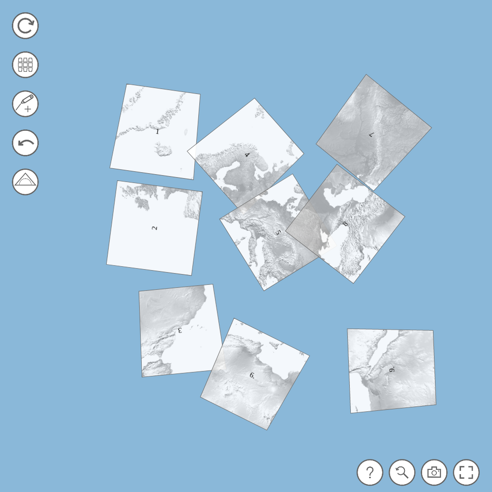
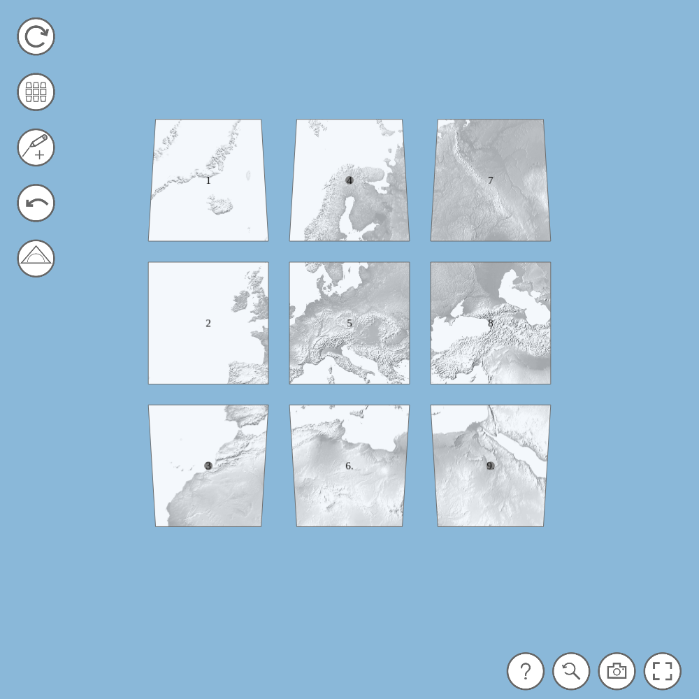
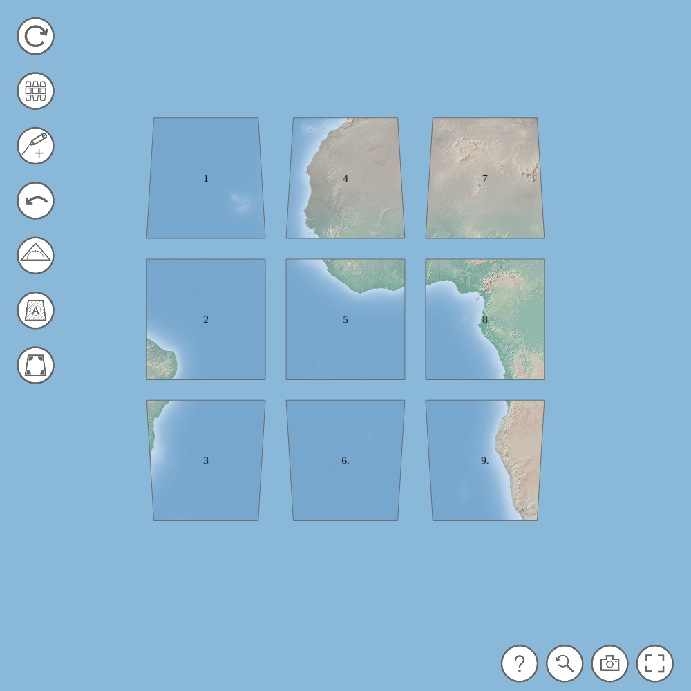
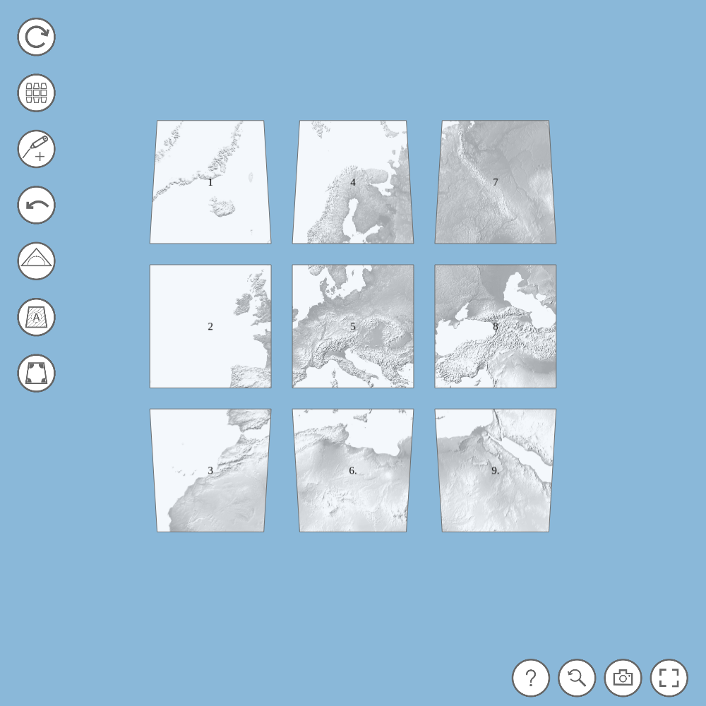

Ein Sektorpuzzle

Wir zeichnen ein Dreieck auf dem Sektormodell einer Kugel

Wir zeichnen ein Dreieck auf dem Sektormodell einer Sattelflaeche

Wir untersuchen die Krümmung der Erde

Wir untersuchen die Krümmung eines Schulglobus

Wir untersuchen die Krümmung einer Sattelfläche